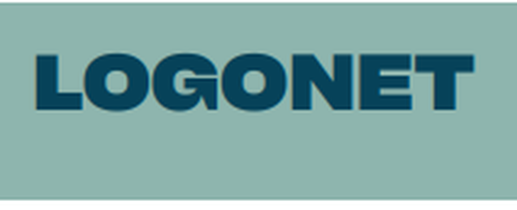
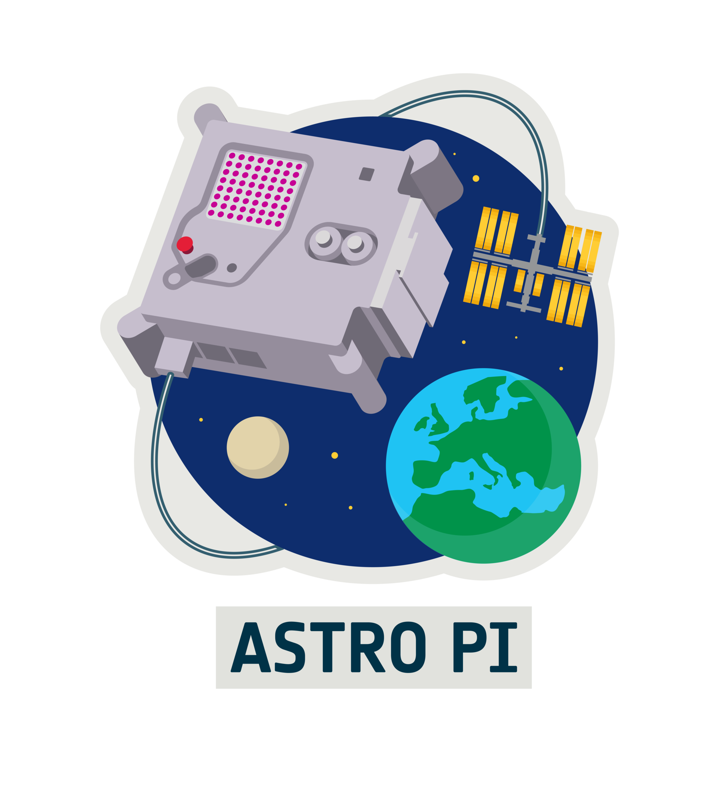

Projets & ateliers professionnels
7 projetsInfrastructures conçues et déployées dans le cadre du BTS. Cliquez sur un projet pour le détail des missions.
AP·1
 Optimisation du parc — OXAMInfrastructure réseau multi-services, 3 départements
ADGPODHCP
+
Optimisation du parc — OXAMInfrastructure réseau multi-services, 3 départements
ADGPODHCP
+
Contexte
Projet réalisé en équipe (Mehmetcan Ari, Noah, Théo Defournier) : mise en place d'une infrastructure réseau optimisée pour l'entreprise OXAM, organisée en trois départements distincts.
Missions réalisées
Architecture réseau multi-services (classe B commercial/livraison, classe C administration) · déploiement d'un serveur Active Directory Windows Server 2019 avec unités organisationnelles, lecteurs réseau et GPO · serveur DHCP pour l'attribution dynamique d'adresses IP · simulation de l'ensemble sous Packet Tracer.
Bilan
Une infrastructure complète et fonctionnelle répondant aux besoins des trois départements, avec une gestion centralisée, sécurisée et efficace des ressources grâce à l'AD, au DHCP et aux GPO.
AP·2

Administration réseau — LogoNetPPE en environnement virtualisé VMware
DNSApache2RAID5
+
Contexte
PPE réalisé avec Paule-Marie Batsotsa et Evan Murzeau : concevoir et déployer une infrastructure informatique performante et sécurisée pour la société LogoNet, entièrement sous VMware.
Missions réalisées
Domaine LogoNet.local sous Windows Server 2019 (Active Directory, GPO, scripts de session par groupe) · serveur DNS Bind9 (zones directe et inverse) et serveur DHCP sous Debian · serveur web Apache2 · serveur de sauvegarde sécurisé en RAID 5 via mdadm.
Bilan
Mise en pratique de l'administration système et réseau en conditions réelles, avec un renforcement de la maîtrise de la gestion de domaine et de la sécurisation des données.
AP·3
 Qualité de service informatique — MDS49Maison Départementale des Sports, pour le CDOS 49
ZabbixCron/SSHIntranet
+
Qualité de service informatique — MDS49Maison Départementale des Sports, pour le CDOS 49
ZabbixCron/SSHIntranet
+
Contexte
Mission confiée par le Conseil départemental de Maine-et-Loire via le groupe OXAM : améliorer l'infrastructure informatique de la MDS49 pour mieux répondre aux besoins des associations sportives locales.
Missions réalisées
Supervision — installation et configuration de Zabbix avec alertes par mail · sauvegarde — automatisation quotidienne des répertoires critiques via crontab et SSH · intranet — déploiement d'un site mds49.local avec analyse des logs et protection contre le brute force.
Bilan
Windows Server 2022 (AD, DFS, réplication), services Linux (DHCP, DNS Bind9, Apache, Zabbix) et sauvegardes automatisées : ce PPE a renforcé ma maîtrise de la supervision réseau et de la sécurité des systèmes.
AP·4
 Infrastructure réseau — Comité d'AgglomérationRefonte réseau pour le groupe OXAM
DMZZabbixApache2
+
Infrastructure réseau — Comité d'AgglomérationRefonte réseau pour le groupe OXAM
DMZZabbixApache2
+
Contexte
Mission confiée au groupe OXAM : moderniser l'infrastructure informatique du Comité d'Agglomération (AGGLO), dont le réseau devenu obsolète ne répondait plus aux besoins des employés.
Missions réalisées
Active Directory — domaine AGGLO.local sous Windows Server 2019 (U.O., groupes, répertoires partagés) · serveur web Apache2 sous Debian 13, accessible en interne et depuis Internet · supervision Zabbix 7.4 sous Debian 12 pour l'ensemble des hôtes du réseau.
Bilan
Réseau complet avec services distincts (Culture/Sport, administratif, DMZ) et plusieurs serveurs Windows et Linux, incluant équipements Cisco, ACL, NAT et segmentation VLAN.
SPACE

Astro Pi — Mission Space LabESA / Fondation Raspberry Pi, réalisé en première
PythonRaspberry PiIA
+
Contexte
Le programme Astro Pi permet aux jeunes de mener des expériences scientifiques à bord de l'ISS via des Raspberry Pi. Objectif de mon équipe en Mission Space Lab : détecter les feux de forêt depuis l'espace.
Réalisations
Programme de prise de photos à intervalles réguliers via la caméra · IA de détection de fumée (indice d'incendie) · enregistrement des données (photo, coordonnées GPS, date/heure) dans un fichier .csv, le tout sur Raspberry Pi 4 équipé du Sense HAT.
STAGE Stage — Micro‑repaireMaintenance informatique, 1ère année
GLPIHardware
+
Stage — Micro‑repaireMaintenance informatique, 1ère année
GLPIHardware
+
Missions
Maintenance logicielle (diagnostic via terminal Linux, mises à jour et réinstallations) · gestion de parc avec GLPI, suivi des tickets et inventaire · installation logicielle sur postes Windows · montage PC et réparation d'ordinateurs portables (écrans, dalles, composants).
STAGE Stage — LEMNIAInfrastructures réseau professionnelles, 2ème année
ARTICAOPNsense3CX
+
Stage — LEMNIAInfrastructures réseau professionnelles, 2ème année
ARTICAOPNsense3CX
+
Missions
Téléphonie IP avec 3CX et téléphones Yealink · proxy web ARTICA lié à un Active Directory (zones DNS, intégration domaine stage.local) · cluster haute disponibilité ARTICA (HaCluster) avec réplication proxy maître/esclave · pare-feu OPNsense avec segmentation VLAN (200/201).